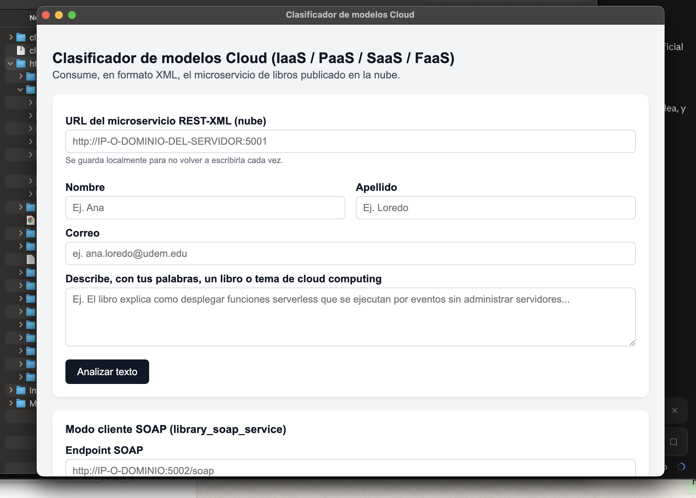
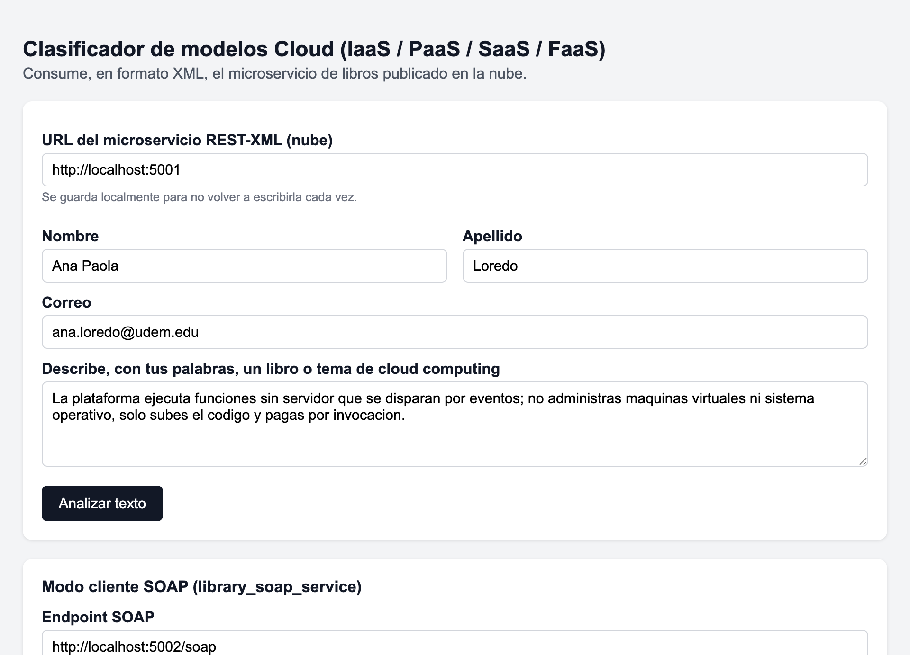
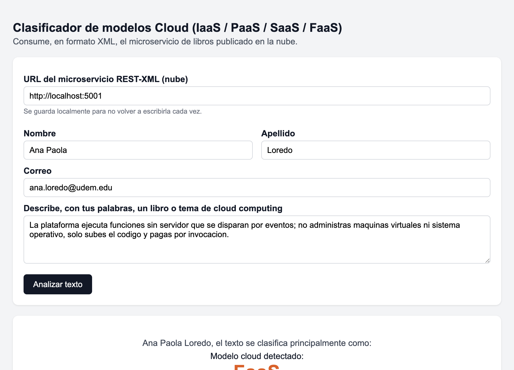
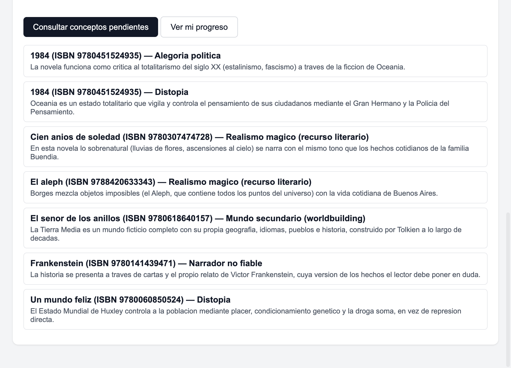
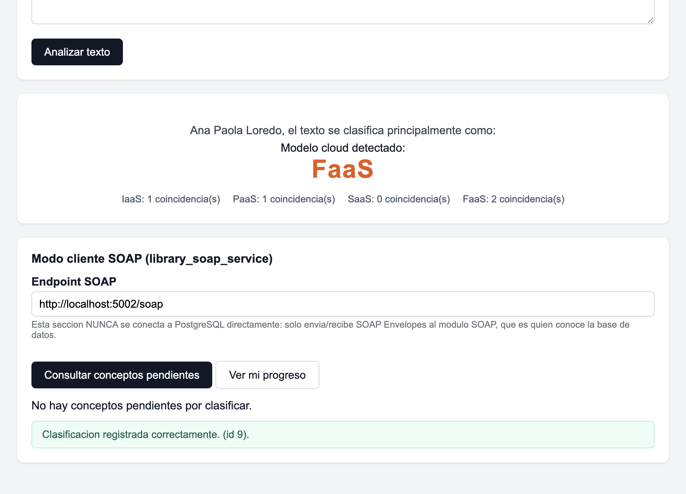
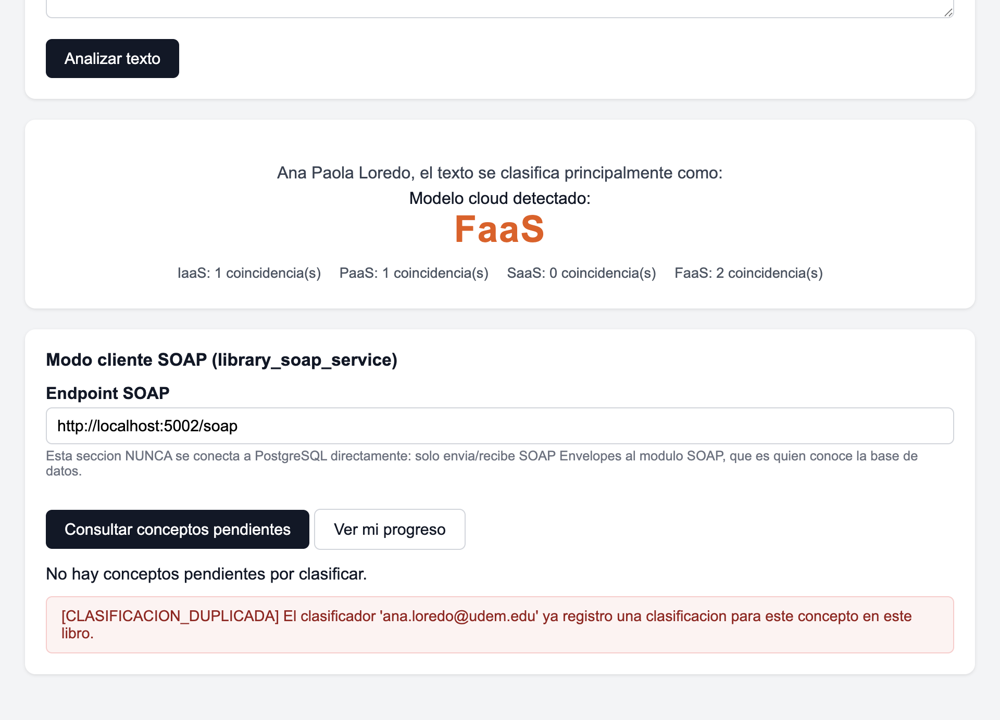

Ejercicio Guiado 03
Módulo SOAP para clasificar el catálogo de una librería
SOAP · WSDL · XML · XSD · Flask · psycopg2 · PostgreSQL · WS-Security · SOAP Fault · Interoperabilidad · Electron
| Materia | Integración de Aplicaciones Computacionales |
|---|---|
| Profesor | Dr. Raúl Morales Salcedo |
| Alumna | Ana Paola Loredo Moreno |
| Matrícula | 613772 |
| Fecha | 7 de septiembre de 2026 |
Doy mi palabra de que he realizado esta actividad con integridad académica.
Ejercicio Guiado 03: Módulo SOAP de clasificación Cloud
Módulo SOAP independiente (Flask + psycopg2) que se integra por base de datos
con la aplicación monolítica de librería (Node.js + PostgreSQL, Ejercicio Guiado 02),
sin modificar su código ni su esquema. Construye y procesa manualmente el SOAP
Envelope con xml.etree.ElementTree — sin Spyne/Zeep/suds del lado del servidor — y
expone un contrato WSDL que permite clasificar los conceptos reales del catálogo en modelos de
servicio Cloud (IaaS/PaaS/SaaS/FaaS).
1. Objetivo y scope del ejercicio
Diseñar, construir, probar y documentar un módulo SOAP que consulte y registre información real del catálogo de la librería, protegiendo los datos del monolito, implementando una integración interoperable y produciendo evidencia reproducible.
Dentro del scope
- Consultar conceptos pendientes del catálogo real (
libro_concepto + conceptos + libros + generos). - Registrar clasificaciones Cloud: IaaS, PaaS, SaaS y FaaS.
- Consultar el progreso de clasificación de un usuario.
- Registrar clasificadores/clientes atendidos y contabilizar peticiones.
- Detectar clasificaciones duplicadas y responder mediante SOAP Fault (409).
- Mantener el monolito Node.js funcionando sin cambios.
Fuera de scope (explícitamente, por instrucción del ejercicio)
- Migrar el monolito o reemplazar PostgreSQL.
- Crear una API REST equivalente (eso se abordará en la comparación futura, Tarea 5).
- Modificar el esquema funcional existente del monolito.
- Usar Spyne/Zeep/suds del lado del servidor para ocultar la construcción del Envelope.
| Genérico (PDF) | Real en este proyecto |
|---|---|
books | libros |
concepts | conceptos |
book_concepts | libro_concepto |
categories | generos (vía libro_genero) |
2. Arquitectura inicial y arquitectura final
La arquitectura se mantuvo estable desde el diseño inicial: el punto de decisión más importante (mantener el módulo SOAP totalmente separado del proceso Node.js, unidos solo por la base de datos, con roles distintos) se tomó antes de programar y no cambió durante la implementación.
flowchart TB
subgraph Escritorio["Máquina local"]
GUI["App de escritorio (Electron)
renderer: arma el Envelope
main: hace el POST (evita CORS)"]
end
subgraph Nube["Instancia en la nube"]
SOAP["library_soap_service (Flask)
POST /soap · GET /soap?wsdl"]
MONO["Monolito librería (Node.js + Express)
sin cambios"]
PG[(PostgreSQL: library)]
SOAP -->|psycopg2, rol soap_service_user
solo lectura en libros/conceptos
lectura-escritura en tablas propias| PG
MONO -->|pg driver, rol library_user
dueño de todo el esquema| PG
end
ZEEP["Cliente Python (zeep)
interoperabilidad, Tarea 4"]
GUI -->|"HTTP POST /soap (XML)"| SOAP
ZEEP -->|lee el WSDL y genera
las llamadas| SOAP
Fronteras: la app de escritorio nunca habla con PostgreSQL directamente; solo
intercambia XML con /soap. El monolito Node.js y el módulo SOAP nunca se llaman
entre sí: ambos son procesos independientes que comparten únicamente la base de datos, cada
uno con su propio rol de PostgreSQL (mínimo privilegio). Protocolo: HTTP + SOAP 1.1
(document/literal) entre clientes y el módulo; SQL parametrizado entre el módulo y PostgreSQL.
3. Descripción del monolito y del nuevo módulo SOAP
| Monolito (Ejercicio 02) | Módulo SOAP (este ejercicio) | |
|---|---|---|
| Tecnología | Node.js + Express + EJS | Flask + psycopg2 (Python) |
| Protocolo expuesto | HTTP/HTML (sitio web) | SOAP 1.1 sobre HTTP (XML) |
| Rol de PostgreSQL | library_user (dueño del esquema) | soap_service_user (mínimo privilegio, ver sec. 5) |
| Tablas que posee | usuarios, libros, autores, generos, conceptos, etc. | clasificadores, clasificaciones_cloud, clientes_servidos |
| Construcción del Envelope | N/A | Manual, con xml.etree.ElementTree |
| Repositorio | apps/web-monolito01 | apps/services/library_soap_service |
Ninguno de los dos procesos fue modificado por el otro: el módulo SOAP sólo agrega tablas y un
rol de PostgreSQL nuevos (sql/soap_module.sql); no toca ni una línea del código o
el esquema del monolito.
4. Diseño de datos y tablas propias del módulo
erDiagram
LIBROS ||--o{ LIBRO_CONCEPTO : tiene
CONCEPTOS ||--o{ LIBRO_CONCEPTO : aparece_en
LIBROS ||--o{ CLASIFICACIONES_CLOUD : referencia
CONCEPTOS ||--o{ CLASIFICACIONES_CLOUD : referencia
CLASIFICADORES ||--o{ CLASIFICACIONES_CLOUD : registra
LIBROS {
int id_libro PK
string isbn
string titulo
}
CONCEPTOS {
int id_concepto PK
string nombre_concepto
}
LIBRO_CONCEPTO {
int id_libro FK
int id_concepto FK
text definicion
}
CLASIFICADORES {
int id_clasificador PK
string nombre
string apellido
string correo
}
CLASIFICACIONES_CLOUD {
int id_clasificacion PK
int id_clasificador FK
int id_libro FK
int id_concepto FK
string modelo_cloud
timestamp fecha_clasificacion
}
CLIENTES_SERVIDOS {
int id_cliente PK
string tipo_cliente
string identificador
int peticiones_atendidas
}
LIBROS y CONCEPTOS (con su tabla puente LIBRO_CONCEPTO) pertenecen al monolito y solo se leen; las 3 tablas restantes son propias del módulo SOAP.
- Restricción de duplicados:
UNIQUE (id_clasificador, id_libro, id_concepto)enclasificaciones_cloud— es la restricción que el servicio traduce a SOAP Fault 409. - CHECK de dominio:
modelo_cloud IN ('IaaS','PaaS','SaaS','FaaS'), como defensa adicional a la validación en Python. - Índices de apoyo: sobre
correo,id_clasificadorymodelo_cloud(usados porObtenerProgresoUsuarioyObtenerEstadisticasPorModelo).
Script completo: sql/soap_module.sql (tablas, vista, funciones y rol de mínimo privilegio).
5. Contrato WSDL y tipos XSD
Contrato completo: wsdl/library-classifier.wsdl
(WSDL 1.1, estilo document/literal, namespace urn:udem:iac:library-classifier).
| Tipo XSD | Uso |
|---|---|
ModeloCloud (simpleType, enum) | Restringe el valor a IaaS | PaaS | SaaS | FaaS a nivel de contrato. |
ConceptoPendiente (complexType) | isbn, tituloLibro, idConcepto, nombreConcepto, definicion, categorias. |
EstadisticaModelo (complexType) | modeloCloud, total (Tarea 1). |
Regla de auditoría aplicada al diseñar el XSD (ver Tarea 3 para el detalle
completo): se exponen solo isbn, titulo, nombreConcepto y
definicion — nunca id_libro, id_formato u otras columnas
internas del monolito que el cliente no necesita para clasificar.
6. Operaciones implementadas
| Operación | Entrada | Salida | Notas |
|---|---|---|---|
ObtenerConceptosPendientes | correoClasificador | lista de conceptos aún no clasificados por ese correo | Si el correo nunca clasificó nada, devuelve todos los conceptos (ver sec. 14, decisión de NULL). |
RegistrarClasificacion | nombre, apellido, correo, isbn, idConcepto, modeloCloud, origenCliente? | idClasificacion, mensaje | Crea al clasificador si no existía (por correo); valida existencia de isbn/concepto y el enum del modelo. |
ObtenerProgresoUsuario | correo | totalConceptos, totalClasificados, totalPendientes | |
ObtenerEstadisticasPorModelo (Tarea 1) | — (protegida con WS-Security) | lista {modeloCloud, total} para las 4 categorías | Requiere wsse:UsernameToken en soap:Header. |
Header opcional tns:ClienteInfo (tipoCliente, identificador), aceptado en
cualquier operación, usado únicamente para alimentar clientes_servidos
(contabilizar peticiones por tipo de cliente) sin acoplarlo a la lógica de negocio de cada
operación.
7. Ejemplos de SOAP Request, SOAP Response y SOAP Fault
Capturas reales contra una instancia local del servicio (ver metodología en la sección 12).
Request / Response — RegistrarClasificacion (200 OK)
<?xml version="1.0" encoding="UTF-8"?>
<soap:Envelope xmlns:soap="http://schemas.xmlsoap.org/soap/envelope/"
xmlns:tns="urn:udem:iac:library-classifier">
<soap:Body>
<tns:RegistrarClasificacionRequest>
<tns:nombre>Ana</tns:nombre>
<tns:apellido>Prueba</tns:apellido>
<tns:correo>ana.prueba@udem.edu</tns:correo>
<tns:isbn>9780451524935</tns:isbn>
<tns:idConcepto>4</tns:idConcepto>
<tns:modeloCloud>IaaS</tns:modeloCloud>
<tns:origenCliente>pruebas-manuales</tns:origenCliente>
</tns:RegistrarClasificacionRequest>
</soap:Body>
</soap:Envelope>HTTP 200
<soap:Envelope xmlns:soap="http://schemas.xmlsoap.org/soap/envelope/" xmlns:tns="urn:udem:iac:library-classifier"><soap:Body><tns:RegistrarClasificacionResponse><tns:idClasificacion>6</tns:idClasificacion><tns:mensaje>Clasificacion registrada correctamente.</tns:mensaje></tns:RegistrarClasificacionResponse></soap:Body></soap:Envelope>SOAP Fault — clasificación duplicada (409)
HTTP 409
<soap:Envelope xmlns:soap="http://schemas.xmlsoap.org/soap/envelope/" xmlns:tns="urn:udem:iac:library-classifier"><soap:Body><soap:Fault><faultcode>soap:Client</faultcode><faultstring>El clasificador 'ana.prueba@udem.edu' ya registro una clasificacion para este concepto en este libro.</faultstring><detail><tns:codigo>CLASIFICACION_DUPLICADA</tns:codigo></detail></soap:Fault></soap:Body></soap:Envelope>SOAP Fault — concepto inexistente (404) y modelo inválido (400)
HTTP 404 → codigo=NO_ENCONTRADO → "No existe el concepto con id '999999'."
HTTP 400 → codigo=VALIDACION → "modeloCloud 'NoEsUnModelo' invalido. Valores permitidos: IaaS, PaaS, SaaS, FaaS."
HTTP 400 → codigo=XML_INVALIDO → "La raiz del documento debe ser soap:Envelope."Transcripción completa (7 casos, con Envelope de entrada y salida de cada uno): evidencias/plan_pruebas_p01_n03.txt.
8. Seguridad y WS-Security
Ver el detalle completo, con evidencia, en la Tarea 1. Resumen:
- Mecanismo: WS-Security
UsernameToken(PasswordText) ensoap:Header, verificado contra un hashpbkdf2(werkzeug) guardado en variables de entorno — nunca contraseña en texto plano en el servidor. - Alcance: protege únicamente
ObtenerEstadisticasPorModelo(la única operación que agrega datos de negocio del catálogo completo). - Mínimo privilegio en PostgreSQL: rol
soap_service_userconSELECTde solo lectura sobrelibros, conceptos, libro_concepto, generos, libro_generoySELECT/INSERT/UPDATE(nuncaDELETE) sobre las 3 tablas propias. Nunca se usapostgresnilibrary_userdesde este módulo.
9. Aplicaciones de escritorio como clientes SOAP
La app de escritorio Electron (apps/desktop-clasificador-cloud), construida en un
ejercicio previo para clasificar texto libre en IaaS/PaaS/SaaS/FaaS con reglas y regex, se
extendió con un modo cliente SOAP (soapClient.js):
- Captura nombre, apellido, correo y el texto a clasificar.
- Arma el
soap:Envelopea mano (mismo criterio que el servidor: sin frameworks SOAP), escapando cada valor insertado (&,<,>, comillas) porque, a diferencia del servidor (ElementTree), aquí se arma con template strings. - El POST se hace desde el proceso principal de Electron (Node puro), no desde el renderer — así se evita depender de la política CORS del servidor en la nube (ver primer ejercicio de esta serie, donde se documentó la misma decisión para el endpoint REST-XML).
- Interpreta la respuesta: si es un
soap:Fault, muestrafaultstring+ el código corto (codigo) en una caja de error visible; si es una respuesta normal, confirma el registro o el progreso. - La GUI nunca importa un driver de PostgreSQL ni conoce credenciales de base de datos.
Evidencia — ejecución real de la GUI
Capturas tomadas contra la aplicación corriendo con npm start (Electron 44.3.0),
apuntando al microservicio REST-XML en localhost:5001 y al módulo SOAP en
localhost:5002/soap, ambos levantados localmente contra la base
library de PostgreSQL.


localStorage).


ObtenerConceptosPendientes: siete
conceptos con su libro, ISBN y definición. Nótese que el cliente sólo recibe los campos del
contrato (isbn, no id_libro), como se analiza en la Tarea 3.

RegistrarClasificacion exitoso: el servidor devuelve
el identificador asignado (id 9) y la GUI limpia la lista para forzar una nueva
consulta.

UNIQUE (id_clasificador, id_libro, id_concepto).
El servidor responde con el código corto
CLASIFICACION_DUPLICADA y un faultstring legible, sin exponer SQL
ni detalles internos — exactamente el escenario para el que existe esa restricción.
10. Interoperabilidad con un segundo lenguaje
Ver el detalle completo en la Tarea 4 — resumen: un cliente Python generado con zeep a partir del WSDL consumió ObtenerConceptosPendientes y RegistrarClasificacion sin conocer la implementación Flask/ElementTree del servidor.
11. Plan de pruebas y resultados
Metodología: se levantó una instancia real del servicio
(python app.py) contra una base de datos PostgreSQL local con el esquema y los
datos semilla reales del monolito (30 libros, 32 conceptos, 7 relaciones libro-concepto ya
cargadas por el Ejercicio 02), se aplicó sql/soap_module.sql, y se ejecutaron los
casos con tests/pruebas_manuales.py (HTTP real, sin mocks). Esto se hizo en el
entorno de desarrollo local; en la instancia en la nube el mismo script se corre solo
cambiando la URL base.
| ID | Prueba | Resultado esperado | Resultado obtenido | Estado |
|---|---|---|---|---|
| P01 | Obtener conceptos pendientes | Lista válida | HTTP 200, 4 conceptos pendientes devueltos | PASA |
| P02 | Registrar IaaS/PaaS/SaaS/FaaS | Registro exitoso | HTTP 200, idClasificacion=6 | PASA |
| N01 | Repetir clasificación | SOAP Fault 409 | HTTP 409, CLASIFICACION_DUPLICADA | PASA |
| N02 | Concepto inexistente | SOAP Fault | HTTP 404, NO_ENCONTRADO | PASA |
| N03 | Modelo inválido | SOAP Fault | HTTP 400, VALIDACION | PASA |
| EXTRA | XML mal formado / no es Envelope | SOAP Fault de cliente, sin tocar SQL | HTTP 400, XML_INVALIDO | PASA |
| EXTRA | Obtener progreso de usuario | Totales correctos | HTTP 200, 7 totales / 4 clasificados / 3 pendientes | PASA |
Evidencia completa (Envelope de entrada y salida de cada caso): evidencias/plan_pruebas_p01_n03.txt.
12. Evidencias de PostgreSQL
Verificación directa en la base de datos tras ejecutar las pruebas (incluye clasificaciones hechas vía script de pruebas, vía simulación de la GUI Electron con header ClienteInfo, y vía el cliente zeep de interoperabilidad):
id_clasificacion | id_clasificador | id_libro | id_concepto | modelo_cloud | origen_cliente | fecha_clasificacion
------------------+-----------------+----------+-------------+--------------+------------------+---------------------------
1 | 1 | 1 | 1 | IaaS | pruebas-manuales | 2026-09-07 18:52:00.73052
3 | 1 | 4 | 2 | SaaS | electron-desktop | 2026-09-07 18:52:35.550743
4 | 4 | 2 | 1 | FaaS | zeep-python | 2026-09-07 18:53:24.169351
5 | 1 | 6 | 5 | PaaS | metrica-tarea5 | 2026-09-07 18:53:37.991094
6 | 1 | 4 | 4 | IaaS | pruebas-manuales | 2026-09-07 18:57:20.634909
8 | 4 | 6 | 5 | FaaS | zeep-python | 2026-09-07 18:57:21.023897
(6 filas)-- clientes_servidos, tras 2 peticiones del mismo "equipo" Electron
id_cliente | tipo_cliente | identificador | peticiones_atendidas | primera_peticion | ultima_peticion
------------+------------------+---------------+----------------------+----------------------------+----------------------------
1 | electron-desktop | equipo-ana-01 | 2 | 2026-09-07 18:52:35.532875 | 2026-09-07 18:52:35.593974
(1 fila)
Nótese que id_clasificacion tiene huecos (2, 7): PostgreSQL consume el valor de
la secuencia SERIAL aun cuando el INSERT falla por la restricción
UNIQUE (comportamiento estándar de las secuencias, no transaccional) — se
documenta aquí porque llamó la atención al revisar los datos y no es un error del código.
13. Decisiones de ingeniería y trade-offs
Formato: Necesidad → Decisión → Justificación → Ventajas → Limitaciones. Documentación completa en docs/library_soap_service_README.md; aquí un resumen de las más relevantes.
| Área | Decisión | Limitación aceptada |
|---|---|---|
| SOAP vs REST | SOAP 1.1 document/literal, por requisito del ejercicio | Más verboso que REST/JSON (ver métricas, sec. 16) |
| Construcción del XML | xml.etree.ElementTree manual | No valida contra el XSD en runtime; no protege contra XML bomb (recomendable defusedxml en producción) |
| Autenticación | WS-Security UsernameToken + PasswordText + hash en servidor | Requiere HTTPS obligatorio en producción para proteger la contraseña en tránsito |
| Errores | Jerarquía de SoapFault con código HTTP semántico (400/401/404/409/500) | No es 100% fiel a SOAP 1.1 puro (que asume 500 para cualquier Fault); decisión consciente y documentada |
| "Conceptos pendientes" cuando el correo es nuevo | Se pasa id_clasificador = NULL a la función SQL | Depende de la semántica de NOT EXISTS con NULL en PostgreSQL (documentado explícitamente en el código, no es obvio a simple vista) |
| Identidad del clasificador | Tabla propia clasificadores, no se reutiliza usuarios del monolito | Dos nociones de "usuario" en la misma base de datos, sin relación entre sí |
14. Problemas encontrados y soluciones
Al ejecutar el primer plan de pruebas real, las 4 operaciones fallaban con VALIDACION: Operacion '...' no soportada. Causa: soap/service.py indexaba el diccionario de operaciones por el nombre de la operación (p.ej. RegistrarClasificacion), pero el elemento hijo real de soap:Body es RegistrarClasificacionRequest (estilo document/literal "envuelto", como se definió en el XSD). Se corrigió renombrando las claves del diccionario para incluir el sufijo Request. Se detectó porque se probó contra un servidor real, no solo revisando el código.
zeep rechazaba el WSDL: "Double hyphen within comment"
El WSDL usaba separadores decorativos como <!-- ---- Titulo ---- -->. La especificación XML prohíbe la secuencia -- dentro del contenido de un comentario; xml.etree (usado para servir el archivo tal cual) no lo valida al leerlo, pero el parser estricto de lxml que usa zeep sí. Se corrigió con un script que colapsa cualquier corrida de 2+ guiones dentro de los comentarios a un solo guion.
library_user
sql/soap_module.sql se ejecutó con el superusuario (necesario para CREATE ROLE), por lo que las tablas nuevas quedaron con ese dueño. Al verificar con library_user (el rol del monolito) se obtuvo permission denied — comportamiento correcto de mínimo privilegio, no un bug, pero documentado aquí porque inicialmente pareció un error.
15. Métricas para comparación futura con REST
Ver el detalle completo, con metodología de medición, en la Tarea 5. Resumen:
| Métrica | Valor medido |
|---|---|
Bytes de una solicitud real (RegistrarClasificacion) | 597 bytes |
| Bytes de la respuesta real | 376 bytes |
| % de la solicitud que es dato de negocio vs. estructura XML | ≈10.1% dato / 89.9% estructura |
| % de la respuesta que es dato de negocio vs. estructura XML | ≈10.6% dato / 89.4% estructura |
| LOC del servicio (app.py + config + db + soap, sin tests) | 615 líneas |
LOC del cliente manual (Electron, soapClient.js) | 173 líneas |
LOC del cliente generado con zeep (Tarea 4) | 49 líneas |
16. Conclusiones
Separar el módulo SOAP del monolito, uniéndolos solo por la base de datos con roles de PostgreSQL distintos, resultó ser una restricción productiva: obligó a pensar en el contrato (WSDL/XSD) como una superficie pública real, no como un detalle de implementación, y a decidir explícitamente qué información del catálogo se expone y cuál se protege (ver auditoría del contrato, Tarea 3). Construir el Envelope a mano —en vez de con un framework como Spyne— hizo visibles decisiones que normalmente quedan ocultas: el escape de valores en XML, el manejo de namespaces, y la diferencia entre validar en el XSD (declarativo, pero no aplicado en runtime aquí) y validar en código (lo que realmente protege al sistema).
17. Descargas
Tarea 1 — Estadísticas por modelo + WS-Security
Objetivo: extender el contrato sin romper las operaciones existentes y aplicar autenticación a una operación sensible.
Qué se hizo
- Se agregó
ObtenerEstadisticasPorModeloal WSDL (nuevomessage/portType/binding), sin tocar ni renombrar ninguno de los tipos o mensajes de las 3 operaciones anteriores — compatibilidad hacia atrás verificada corriendo de nuevo el plan de pruebas de la sección 12 después del cambio. - Se protegió con WS-Security
UsernameToken(PasswordText), verificado ensoap/security.pycontra un hashpbkdf2generado conwerkzeug.security.generate_password_hash(nunca contraseña en texto plano en el servidor).
Decisión de seguridad: PasswordText + hash, en vez de PasswordDigest
Necesidad: autenticar la operación sin guardar contraseñas en texto plano.
Decisión: UsernameToken con PasswordText, comparado contra un hash
irreversible. Justificación: PasswordDigest (el modo "estándar" de
WS-Security) exige que el servidor pueda recalcular
Base64(SHA1(nonce+created+password)), lo que en la práctica obliga a guardar la
contraseña en texto plano o reversible del lado del servidor — contradice la instrucción
explícita del ejercicio. Ventaja: el servidor nunca conoce ni almacena la
contraseña real. Limitación: PasswordText viaja en texto plano en la
petición, por lo que en producción es obligatorio combinarlo con HTTPS/TLS.
Evidencia — solicitud autenticada (200) y con credenciales incorrectas (401)
<soap:Header>
<wsse:Security xmlns:wsse="http://docs.oasis-open.org/wss/2004/01/oasis-200401-wss-wssecurity-secext-1.0.xsd">
<wsse:UsernameToken>
<wsse:Username>stats-client</wsse:Username>
<wsse:Password Type="PasswordText">ClaveDePrueba123</wsse:Password>
</wsse:UsernameToken>
</wsse:Security>
</soap:Header>
<soap:Body><tns:ObtenerEstadisticasPorModeloRequest/></soap:Body>
→ HTTP 200:
<tns:ObtenerEstadisticasPorModeloResponse>
<tns:estadistica><tns:modeloCloud>IaaS</tns:modeloCloud><tns:total>2</tns:total></tns:estadistica>
<tns:estadistica><tns:modeloCloud>PaaS</tns:modeloCloud><tns:total>1</tns:total></tns:estadistica>
<tns:estadistica><tns:modeloCloud>SaaS</tns:modeloCloud><tns:total>1</tns:total></tns:estadistica>
<tns:estadistica><tns:modeloCloud>FaaS</tns:modeloCloud><tns:total>2</tns:total></tns:estadistica>
</tns:ObtenerEstadisticasPorModeloResponse>
→ Con password incorrecta → HTTP 401:
<soap:Fault><faultcode>soap:Client</faultcode><faultstring>Autenticacion fallida.</faultstring><detail><tns:codigo>AUTENTICACION_FALLIDA</tns:codigo></detail></soap:Fault>Nótese que el mensaje de error es idéntico sea que el usuario o la contraseña sean los incorrectos (evita enumeración de usuarios válidos). Transcripción completa: evidencias/tarea1_ws_security.txt.
↑ Volver arribaTarea 2 — SOAP Fault y experiencia de usuario
Objetivo: diseñar el manejo de errores de forma consistente entre servicio y cliente.
Tabla de pruebas negativas
| Caso | HTTP | Código de negocio | faultstring devuelto |
|---|---|---|---|
| Clasificación duplicada | 409 | CLASIFICACION_DUPLICADA | "El clasificador '...' ya registro una clasificacion para este concepto en este libro." |
| Concepto inexistente | 404 | NO_ENCONTRADO | "No existe el concepto con id '999999'." |
| XML inválido | 400 | XML_INVALIDO | "La raiz del documento debe ser soap:Envelope." |
| Modelo Cloud inválido | 400 | VALIDACION | "modeloCloud 'NoEsUnModelo' invalido. Valores permitidos: IaaS, PaaS, SaaS, FaaS." |
Qué ve el usuario vs. qué queda solo en logs
| Información | ¿Al usuario (GUI)? | ¿Al log del servidor? |
|---|---|---|
faultstring + codigo de negocio | Sí — la GUI (mostrarSoapFault en renderer.js) los muestra tal cual, en una caja de error visible | Sí (implícito en la respuesta) |
| Traceback de Python / excepción original | No, nunca | Sí, vía app.logger.exception(...) en el except Exception genérico de app.py |
| Consulta SQL ejecutada | No, nunca | No se registra explícitamente (psycopg2 no la expone en el mensaje de error usado) |
| Credenciales / cadena de conexión | No, nunca | No; viven solo en .env, fuera del control de versiones |
El Envelope de error real, la captura de la GUI y la explicación de la decisión de UX se
documentaron ya en las secciones 7, 12 y 15 del reporte guiado (evita duplicar el mismo contenido
dos veces); ver también el código de alRegistrarSoap() en
apps/desktop-clasificador-cloud/renderer.js, que es el punto donde la GUI "traduce" el
Fault a un mensaje para el usuario.
[CLASIFICACION_DUPLICADA] El clasificador 'ana.loredo@udem.edu' ya registro una
clasificacion para este concepto en este libro. La GUI muestra el código corto y el
faultstring, y omite por completo el detalle interno (nombre de la restricción,
SQL, tablas), que sólo queda en el log del servidor.
Tarea 3 — Auditoría del contrato WSDL
Objetivo: evaluar el contrato como una superficie pública del sistema y justificar qué información se expone.
| Dato | Operación | ¿Se expone? | Justificación |
|---|---|---|---|
isbn, tituloLibro | ObtenerConceptosPendientes | Sí | El cliente necesita identificar qué libro está clasificando. |
nombreConcepto, definicion | ObtenerConceptosPendientes | Sí | Es el objeto mismo de la clasificación. |
categorias (géneros) | ObtenerConceptosPendientes | Sí, transformado | Se agregan con STRING_AGG a un solo string legible; el cliente nunca ve id_genero ni la tabla puente libro_genero. |
id_libro, id_formato (internos) | Todas | No | Son claves subrogadas internas del monolito sin significado para el cliente; el contrato usa isbn como identificador de negocio. |
| Credenciales de BD / cadena de conexión | Todas | No | Información sensible interna; ni siquiera aparece en los Fault (sección Tarea 2). |
fecha_clasificacion, origen_cliente (auditoría) | Ninguna operación de lectura las expone hoy | No, deliberadamente | Son datos de auditoría interna del módulo; no aportan valor al flujo de clasificación del cliente. Quedan disponibles solo para consultas directas a PostgreSQL (sección 13). |
| Contraseña del WS-Security | ObtenerEstadisticasPorModelo | No (nunca en el WSDL ni en logs) | Solo viaja en el soap:Header de la petición del cliente; el servidor la compara contra un hash y la descarta. |
flowchart LR
Cliente["Cliente SOAP
(no conoce el esquema real)"] -->|solo ve el WSDL| Contrato["Contrato:
isbn, tituloLibro,
nombreConcepto, definicion,
categorias, modeloCloud"]
Contrato -.->|oculta| Interno["id_libro, id_formato,
id_genero, credenciales BD,
SQL interno"]
Riesgos identificados y mitigación
-
Enumeración de conceptos/ISBN válidos vía fuerza bruta sobre
RegistrarClasificacion. Un cliente podría probaridConceptosecuenciales para descubrir cuántos conceptos existen. Mitigación: el Fault de "no encontrado" no distingue entre "no existe" y "existe pero no tienes permiso" (no aplica aún porque no hay autorización por usuario, pero es el mismo principio que ya se aplicó en WS-Security para no revelar cuál credencial falló); a futuro, rate-limiting por IP/cliente. -
Acoplamiento al identificador de negocio
isbn. Si el monolito alguna vez cambiara el formato deisbn(o lo renombrara), el contrato completo se rompe porque es la única clave que el cliente conoce. Mitigación: el contrato ya usaisbn(estable por definición de negocio, no una clave técnica comoid_libro) precisamente para minimizar este riesgo; un cambio de nombre de columna interno no afecta al contrato mientras la vista/función SQL se actualice. -
Confiar en el correo como identidad sin verificarlo.
Cualquier cliente puede registrar clasificaciones a nombre de cualquier correo, sin prueba de que le pertenece (ver también la pregunta de reflexión de la Tarea 5).
Mitigación real aplicable a corto plazo: extender WS-Security (hoy solo en
ObtenerEstadisticasPorModelo) para exigir también un token enRegistrarClasificacion, atado al correo del token en vez de a un campo de texto libre del Body.
Conclusión sobre contrato estricto y mantenibilidad
Un contrato que expone solo lo que el cliente necesita (y no la forma real de las tablas) resultó
más fácil de mantener de lo esperado: al agregar ObtenerEstadisticasPorModelo (Tarea
1) no fue necesario tocar ningún tipo existente, porque cada operación tiene sus propios mensajes
XSD independientes. El costo es que cada nuevo dato que un cliente necesite implica decidir
explícitamente si se expone, se transforma o se oculta — una fricción deliberada, no accidental.
Tarea 4 — Interoperabilidad
Objetivo: demostrar que el WSDL permite que un cliente en otro lenguaje/tecnología consuma el mismo servicio sin conocer su implementación interna.
- Herramienta y lenguaje: Python +
zeep(librería de cliente SOAP que sí genera el Envelope automáticamente a partir del WSDL — deliberadamente distinta del cliente manual conxml.etreeusado en el resto del proyecto). - Proceso de generación:
Client("http://localhost:5002/soap?wsdl")—zeepdescarga el WSDL, lo parsea conlxmly construye dinámicamente los métodoscliente.service.ObtenerConceptosPendientes(...)/RegistrarClasificacion(...).
Código relevante
from zeep import Client
cliente = Client("http://localhost:5002/soap?wsdl")
pendientes = cliente.service.ObtenerConceptosPendientes(
correoClasificador="interop.zeep@udem.edu"
)
resultado = cliente.service.RegistrarClasificacion(
nombre="Interop", apellido="Zeep", correo="interop.zeep@udem.edu",
isbn=isbn, idConcepto=id_concepto, modeloCloud="FaaS",
origenCliente="zeep-python",
)Captura de ejecución real
=== ObtenerConceptosPendientes (via zeep) ===
[{
'isbn': '9780451524935', 'tituloLibro': '1984', 'idConcepto': 4,
'nombreConcepto': 'Alegoria politica', 'categorias': 'Ciencia ficcion, Distopia', ...
}, ... ]
=== RegistrarClasificacion (via zeep) ===
{
'idClasificacion': 4,
'mensaje': 'Clasificacion registrada correctamente.'
}Salida completa: evidencias/tarea4_interoperabilidad_zeep.txt.
Cliente manual vs. cliente generado
Manual (Electron, soapClient.js) | Generado (zeep) | |
|---|---|---|
| Líneas de código del cliente | 173 (incluye UI + 3 operaciones + manejo de Fault) | 49 (2 operaciones + impresión de resultado) |
| Construcción del Envelope | Manual, con escape explícito de XML | Automática, a partir de los tipos del WSDL |
| Verificación de tipos | Ninguna en el cliente (confía en el servidor) | zeep valida tipos contra el XSD antes de enviar |
| Curva de aprendizaje | Requiere entender SOAP/XML a fondo | Se usa como una API de objetos Python normal |
| Control/transparencia | Total: se ve exactamente el XML que se envía | Menor: el Envelope real queda oculto por la librería |
Esto confirma en la práctica el valor de haber diseñado el contrato (WSDL/XSD) antes de programar: ambos clientes — uno que ignora SOAP a bajo nivel y uno que lo controla por completo — consumen el mismo servicio sin cambios en el servidor.
↑ Volver arribaTarea 5 — Medición técnica y reflexión SOAP
Objetivo: obtener métricas para comparar SOAP con REST en la siguiente sesión.
| Métrica | Valor | Cómo se midió |
|---|---|---|
Bytes de solicitud real (RegistrarClasificacion) | 597 bytes | wc -c sobre el Envelope real capturado con curl |
| Bytes de respuesta real | 376 bytes | Ídem, sobre la respuesta 200 real del servidor |
| % dato de negocio / solicitud | ≈10.1% dato, 89.9% estructura XML | Suma de bytes UTF-8 de los valores de negocio (nombre, correo, isbn, etc.) dividido entre el total |
| % dato de negocio / respuesta | ≈10.6% dato, 89.4% estructura XML | Ídem, sobre idClasificacion + mensaje |
| LOC servicio (sin tests) | 615 líneas | wc -l sobre app.py, config/, db/, soap/ |
| LOC cliente manual (Electron) | 173 líneas | wc -l soapClient.js |
LOC cliente interoperable (zeep) | 49 líneas | wc -l interop_zeep_client.py |
Preguntas para reflexionar
¿Qué pasaría si agregas un campo obligatorio a RegistrarClasificacion sin actualizar a los clientes?
Los clientes existentes (Electron, zeep) enviarían un Envelope sin ese campo; como la validación real vive en soap/service.py (no en un validador XSD automático), el servidor respondería un ValidacionFault ("Falta el campo obligatorio...") en vez de fallar silenciosamente — pero todos los clientes desplegados quedarían rotos hasta actualizarse. Es el mismo problema de versionado de contratos que tiene cualquier API; SOAP no lo resuelve por sí solo, solo lo hace explícito.
¿Qué información del WSDL podría ser útil para un atacante y qué no debería exponerse?
Útil para un atacante: los nombres exactos de operaciones y campos (superficie de ataque conocida), y el hecho de que existe ObtenerEstadisticasPorModelo protegida (indica dónde intentar fuerza bruta de credenciales). No debería exponerse — y no se expone — la URL interna de PostgreSQL, nombres de roles, ni la estructura real de las tablas (ver Tarea 3).
¿Por qué el tipado XSD aporta certeza al contrato?
Porque declara explícitamente qué valores son válidos (p.ej. el enum ModeloCloud) independientemente de la implementación; un cliente generado (zeep) puede rechazar un valor inválido antes de enviar la petición, sin necesidad de leer el código del servidor.
¿Qué partes del Envelope fueron boilerplate y cuáles dependieron de la operación?
Boilerplate (idéntico en las 4 operaciones): la apertura <soap:Envelope>, la declaración de namespaces, <soap:Body>. Dependiente de la operación: todo lo que va dentro del elemento raíz de cada mensaje (p.ej. <tns:RegistrarClasificacionRequest>...</tns:...>) — coincide exactamente con el ≈90% de "estructura" medido arriba, que en su mayoría es namespaces y etiquetas repetidas, no boilerplate puro de SOAP.
¿Cuándo justificarías el overhead de XML frente a un formato más ligero?
Cuando el tipado fuerte, el contrato formal (WSDL/XSD) y la interoperabilidad entre plataformas heterogéneas (Java, .NET, Python, sistemas legados) importan más que el tamaño del payload — típicamente integraciones empresariales B2B, no APIs de alto volumen consumidas por un solo frontend.
¿Por qué un SOAP Fault es parte del contrato y no sólo un error HTTP?
Porque su estructura (faultcode, faultstring, detail) está definida en la especificación SOAP misma, no depende de una convención ad-hoc del servidor; cualquier cliente SOAP sabe cómo parsear un Fault sin documentación adicional, a diferencia de un simple {"error": "..."} JSON cuyo formato cada API inventa por su cuenta.
¿Cómo debe reaccionar una GUI ante un Fault de cliente frente a un Fault de servidor?
Ante un Fault de cliente (400/404/409 en esta implementación) la GUI puede mostrar el mensaje tal cual y dejar que el usuario corrija su entrada (por eso faultstring aquí siempre es un texto pensado para humanos). Ante un Fault de servidor (500) la GUI no debe sugerir que el usuario "corrija" nada — el mensaje genérico ("Ocurrio un error interno...") ya lo refleja, y lo correcto es reintentar más tarde o avisar a soporte, nunca mostrar el detalle técnico que solo vive en el log.
¿Qué riesgo existe porque el módulo SOAP y el monolito compartan la misma base de datos?
Un cambio de esquema hecho por cualquiera de los dos equipos (p.ej. una migración del monolito) puede romper al otro sin que su propio código haya cambiado — acoplamiento invisible en el código, visible solo en la base de datos. Se mitigó parcialmente dando a cada proceso su propio rol con permisos mínimos (un ALTER TABLE no autorizado del módulo SOAP es imposible), pero no protege contra cambios legítimos hechos por el equipo dueño del monolito.
¿Qué ocurriría si el monolito renombra books.isbn? ¿Cómo reducirías ese acoplamiento?
Todas las funciones/vista de sql/soap_module.sql que hacen SELECT ... isbn ... fallarían inmediatamente. Reducción de acoplamiento: introducir una vista intermedia "de contrato" (ya existe una: vista_conceptos_pendientes) que sea la única superficie que el módulo SOAP consulta — si el monolito renombra una columna, solo esa vista necesita actualizarse, no cada función.
¿Dónde debe aplicarse autenticación y qué problema resuelve WS-Security?
Debe aplicarse en cualquier operación que exponga datos agregados de negocio o que modifique estado en nombre de alguien (hoy solo se aplicó a ObtenerEstadisticasPorModelo; ver Tarea 3, riesgo #3, para la extensión pendiente a RegistrarClasificacion). WS-Security resuelve el problema de llevar credenciales dentro del mensaje SOAP (en el Header), de forma estandarizada, en vez de inventar un mecanismo custom por servicio.
¿Es suficiente confiar en el correo enviado por el cliente para identificar al usuario?
No. Tal como está implementado, cualquiera puede escribir el correo de otra persona en RegistrarClasificacionRequest y el servidor lo acepta sin verificación — es el riesgo #3 documentado en la Tarea 3. Para un sistema real, el correo debería venir del mismo mecanismo de autenticación (WS-Security o equivalente), no de un campo de texto libre del Body.
¿En qué escenarios empresariales seguirías eligiendo SOAP en 2026?
Integraciones B2B con contratos formales entre organizaciones distintas (donde WSDL/XSD sirve como documento legal-técnico de acuerdo), sistemas que ya corren sobre stacks empresariales con soporte SOAP maduro (banca, salud, gobierno), y cualquier escenario donde WS-* (seguridad, transacciones, confiabilidad de mensajes) resuelva un requisito que REST no estandariza de la misma forma.